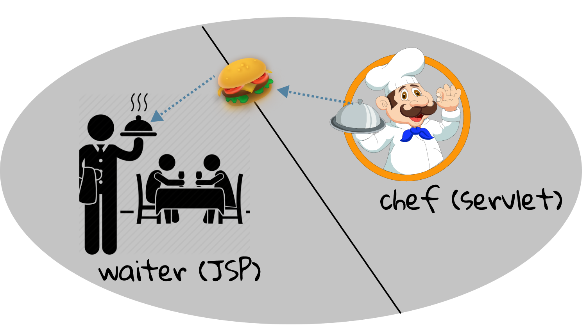
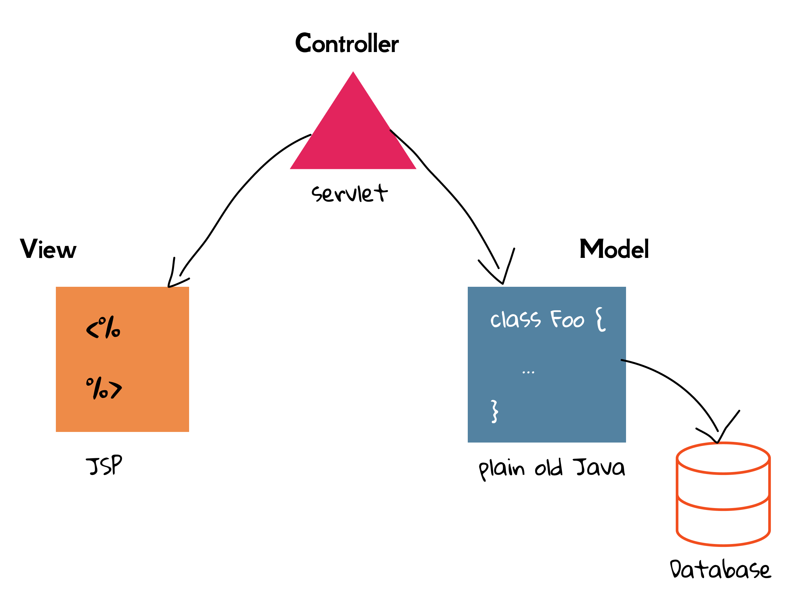

2.3 A Brief Introduction To MVC
In our simple first_java_ee project, we have presented servlets and JSP, two of the most essential components in Java EE's web profile. Both can generate web pages dynamically through a request-response model. And we also briefed discussed the importance of introducing JSP in Section 1.5.
Now let's move forward, and consider the case that you are going to design and develop a large web site. When it comes to large, it mainly means that it provides many functionalities, and therefore, many web pages. For example, for a book-selling website like Amazon, it must meet the basic requirements as the following:
- User sign up and login
- Admin add/delete/modify books
- Display the books
- Search the books
- Purchase books
- Track the delivering of books
- ...
Will you create a servlet for each single functionality point?[1] If so, it would result in a mess. The reasons are several-folds, and the advantages of JSP can be the pitfalls of servlets. Then, can we replace all servlets with JSP? Well, technically, it is possible, and it would result in a bigger mess. No one really likes to write Java code inside HTML, and it is quite UGLY.
Combine servlets and JSP
To answer such vexed question, we can use both servlets and JSP at the time, and the two messes together can magically be a harmony. Why can it be? Well, the basic idea is simple: make each one shoulder a different responsibility. To be specific, servlets deal with the business logic, such as retrieving data from database[2], while JSP only cares about how to display the data (i.e., presentation)[3]. Take a restaurant an example. In the restaurant industry, some parts of a restaurant are referred to as front of house and others as back of house. Front of house is where customers are. Back of house is where the chefs work in the kitchen[4]. Dishes (like data) are made by chefs (back-end, like servlets) and delivered to customers by waiters (front-end, like JSP). Note that waiters themselves do not make dishes directly, and chefs do not contact with customers directly either. Of course, this analogy is not completely technically correct, because the dishes delivered to customers are exactly what chefs made, however the data presented to the client can be different from what servlets generated.

Let's consider the case of user login in a book-selling website. When a user sends her name and password by making an HTTP request, the destination servlet would authenticate her by further retrieving data from the database to determine whether this name exits, and whether password is matched. Suppose both the name and password are correct, the servlet mostly would send data wrapped with the user's profile in a Java object or simply JSON[5], or simply with an OK message, such as "Login success", to JSP. And suppose either the name and password is wrong, the servlet mostly send data wrapped with an error message, such as "Login failed", to JSP.
Before we move on, let's have a warm-up to figure out how a servlet is forwarded to JSP, without considering the extra data transferred. Recall that in index.jsp, the HTML <a href="hello-servlet">Hello Servlet</a> can create a clickable hyperlink to hello-servlet, and that happens in the browser. However, the process that a servlet is forwarded to JSP happens in the server through the same request. Sound a little obscure? Let the code talk. First of all, create a.jsp under webapp, and add anything you like inside it. Then create ForwardServlet.java under src | main | java | com.swufe.javaee.ch2, and add the following code inside doGet() of ForwardServlet.java:
RequestDispatcher dispatcher = request.getRequestDispatcher("a.jsp");
dispatcher.forward(request, response);
The default URL name of ForwardServlet is /ForwardServlet, and try to access it. If everything goes well, you shall see the content of a.jsp. Aha! The servlet successfully forward a request to another JSP. Please note that it is to forward a request. To put it another way, both servlet and JSP are using the same request object, and the forwarding happens in the server. People who are with shape eyes might notice that although the display content is from a.jsp, the URL remains /ForwardServlet.
Let's have a coffee and take a break as information is overloaded in the last paragraph. Don't get depressed if you have troubles in understanding what it means. We will talk about RequestDispatcher again in the latter of this book, and you can also explore this API on your own by applying the skills you learned in the last section.
MVC
Now it is time to introduce MVC, a commonly used software design pattern. In the subsection, we separated the roles of servlets and JSP, and in fact, we can further take some responsibilities out of servlets.
Let's revisit the business logic, which is mainly related with the database. In the book-selling website example, it may include:
- User authentication.
- Retrieve a user's profile.
- Add/delete book.
- Predicate "Guess you like" from the recommendation system.
- ...
A simple question is: must those business logics be in servlets? Or, what are the advantages if we can take them out of servlets? The benefits of the further separating are mainly tremendous. Not every Java programmer needs to know Java EE, and they would like to write plain old Java code[6]. Also, plain code Java code with Java EE runtime will occur in less performance overhead. And most importantly, it paves the way to reuse existing awesome Java libraries. For example, the recommendation system may be written in plain old Java code, and it can used not only by the web applications, but also by Android, iOS and desktop applications. You should never assume that your business logic will be accessed only from the web.
Therefore, we can take the business logic out of the servlet, and put it in a "Model" (i.e., a reusable plain old Java class). The model is a combination of the business data (like the profile of a book) and that methods (rules) operate on that data. The role of a JSP remains the same. It acts as a "View" and is responsible for the presentation. In the same time, the servlet degrades to a "Controller", and it mainly takes user input from the request and figures out what it means to the model. It also tells the model to update itself, and makes the new model state available for the view.

To put them together, the whole web application is divided into three parts: Model, View and Controller (a.k.a., MVC). MVC is a pattern in software design commonly used to implement user interfaces, data, and controlling logic. It emphasizes a separation between the software’s business logic and display. This "separation of concerns" provides for a better division of labor and improved maintenance. Also note that, MVC is not specific to servlets and JSPs. The clean separation of business logic and presentation is just as valid in any other kind of application.
Understanding MVC is important when developing a web application, and we will stick with this design pattern throughout this book from now on. We also will discuss how to improve this MVC design in the latter of this book.
[1] Separating different functionality points into different classes/methods is a common and well-tested approach in developing software, because no one would like to maintain a giant class/method.
[2] Database means the location where data is stored literally. In fact, it is one of the core courses in Computer Science, and is also of importance for web developing. Some fundamental introduction to database will be covered in the later of this book.
[3] The component that cares about the business logic is also known as back-end. As the counterpart, the one that cares about the presentation is also known as front-end. For example, people who develops HTML, CSS and JS are front-end developers.
[4] This example is adapted from Rust Book.
[5] JSON, short for JavaScript Object Notation, is a lightweight data-interchange format, and it is "self-describing" and easy to understand. For example, the JSON String {"name":"John", "age":30} defines an object with 2 properties, and each property has a value. JSON is widely used in web, and we will cover it in the later.
[6] In software engineering, plain old Java code means ordinary Java code, not bound by any special restriction.